In [14]: import networkx as nx
In [15]: G=nx.barbell_graph(4,2)#(no. of nodes in a particular community, no. of nodes btw tow communities)
In [16]: nx.draw(G)
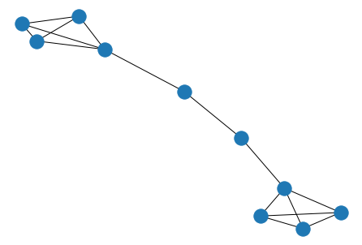
In [17]: G=nx.complete_graph(4)# all nodes are connected to n-1 nodes
In [18]: nx.draw(G)
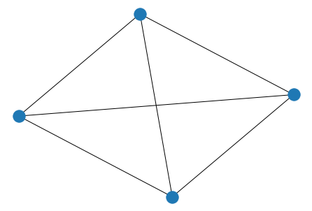
In [19]: #sink node does not ahve outgoing edge
In [20]: #sink node does not have outgoing edge
In [21]: G=nx.cycle_graph(5)
In [22]: nx.draw(G)
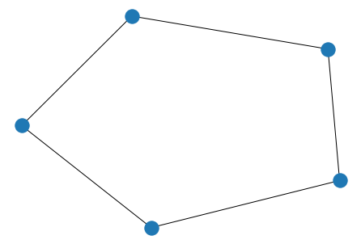
In [23]: G=nx.ladder_graph(5)
In [24]: nx.draw(G)
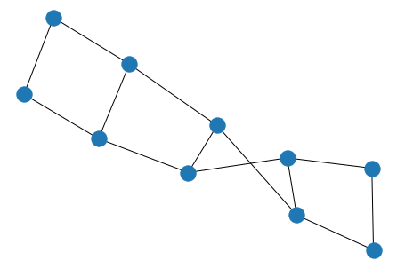
In [25]: G=nx.path_graph(5)
In [26]: nx.draw(G)
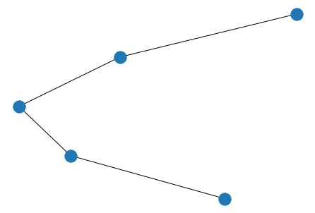
In [27]: G=nx.star_graph(5)#(outer nodes + one hub node=n+1)
In [28]: nx.draw(G)
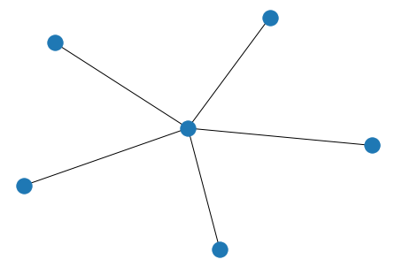
In [29]: G=nx.wheel_graph(4)
In [30]: nx.draw(G)
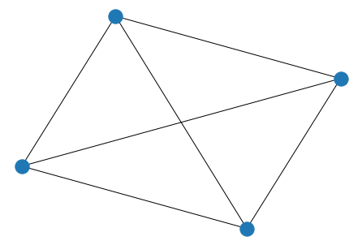
In [31]: G=nx.wheel_graph(6)
In [32]: nx.draw(G)
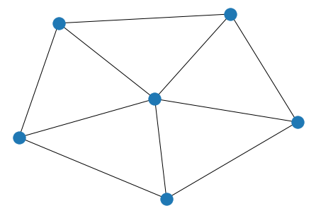
In [33]: G=nx.wheel_graph(8)
In [34]: nx.draw(G)
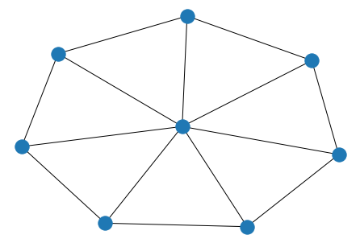
In [35]: #random graph
In [36]: G=nx.gnp_random_graph(5,0.5)#(total number of nodes, probability of edge creation)
In [37]: nx.draw(G)
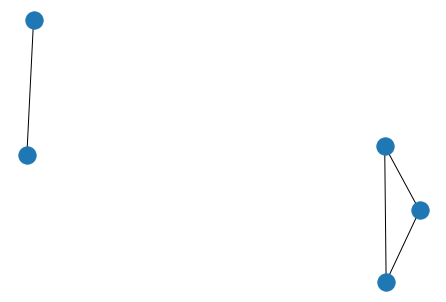
In [38]: G=nx.gnp_random_graph(5,0.9)#(total number of nodes, probability of edge creation)
In [39]: nx.draw(G)
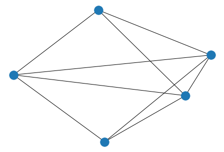
In [40]: G=nx.gnp_random_graph(5,0.1)#(total number of nodes, probability of edge creation)
In [41]: nx.draw(G)
In [42]: G=nx.gnp_random_graph(5,1)#(total number of nodes, probability of edge creation)
In [43]: nx.draw(G)
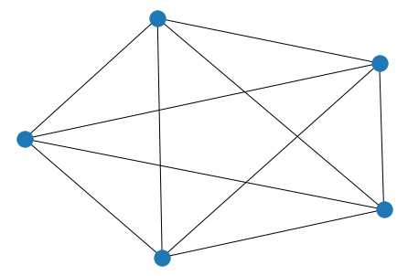
In [44]: U=nx.Graph()#undirected graph
In [45]: nx.draw(U)

In [46]: G=nx.DiGraph()
In [47]: nx.draw(G)

In [48]: G.nodes()
Out[48]: NodeView(())
In [49]: G.add-nodes_from([0,1,2])
Traceback (most recent call last):
File "<ipython-input-49-4092b034665d>", line 1, in <module>
G.add-nodes_from([0,1,2])
AttributeError: 'DiGraph' object has no attribute 'add'
In [50]: G.add_nodes_from([0,1,2])
In [51]: nx.draw(G)
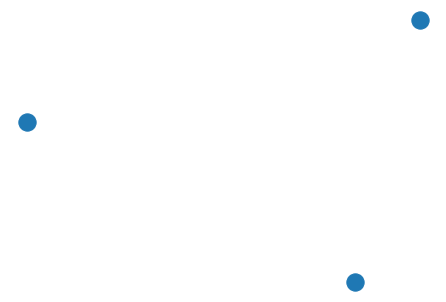
In [52]: G.add_nodes_from([i for i in range(10)])
In [53]: nx.draw(G)
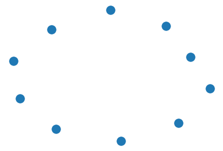
In [54]: list(G.nodes())
Out[54]: [0, 1, 2, 3, 4, 5, 6, 7, 8, 9]
In [55]: G.edges()#undirected and directed outgoing edge
Out[55]: OutEdgeView([])
In [56]: G.out_edges()
Out[56]: OutEdgeView([])
In [57]: G.in_edges()
Out[57]: InEdgeView([])
In [58]: G.add_edges(1,2)
Traceback (most recent call last):
File "<ipython-input-58-1e914b2db34b>", line 1, in <module>
G.add_edges(1,2)
AttributeError: 'DiGraph' object has no attribute 'add_edges'
In [59]: G.add_edge(1,2)
In [60]: nx.draw(G)
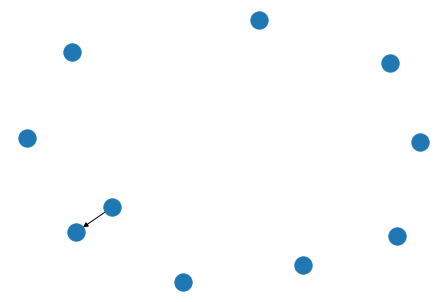
In [61]: G.out_edges(1)
Out[61]: OutEdgeDataView([(1, 2)])
In [62]: G.out_edges(2)
Out[62]: OutEdgeDataView([])
In [63]: G.in_edges(1)
Out[63]: InEdgeDataView([])
In [64]: G.in_edges(2)
Out[64]: InEdgeDataView([(1, 2)])
In [65]: G.add_edge(0,3)
In [66]: nx.draw(G)
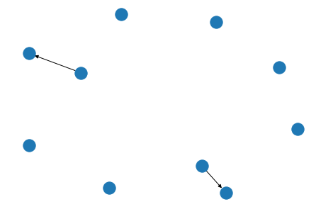
In [67]: G.add_edge(2,3)
In [68]: nx.draw(G)
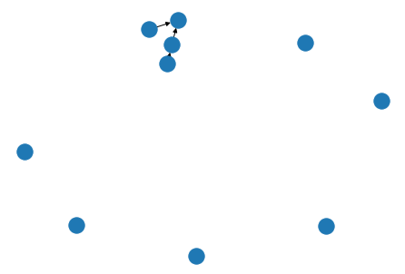
In [69]: G.add_edge(3,2)
In [70]: nx.draw(G)
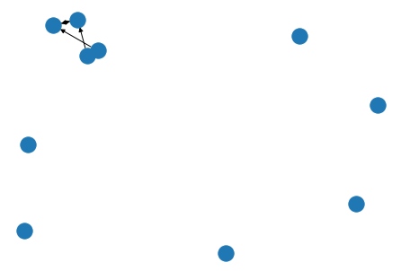
In [71]: G.add_edge(3,4)
In [72]: nx.draw(G)
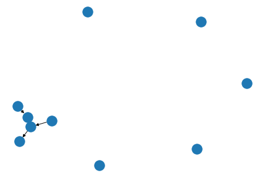
In [73]: G.add_edge(4,1)
In [74]: nx.draw(G)
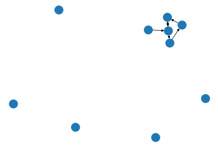
In [75]: list(G.out_edges(2))
Out[75]: [(2, 3)]
In [76]: